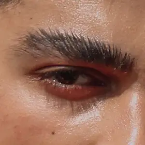
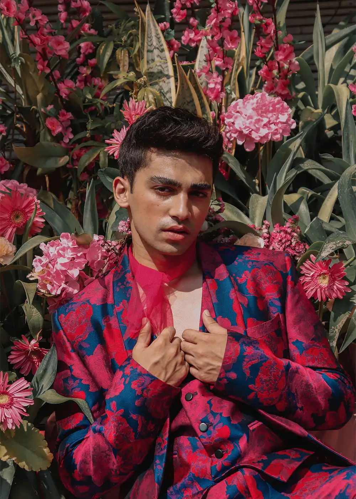
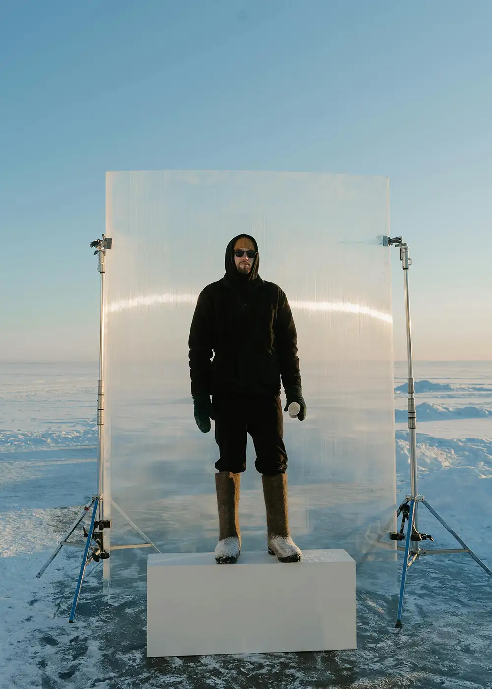
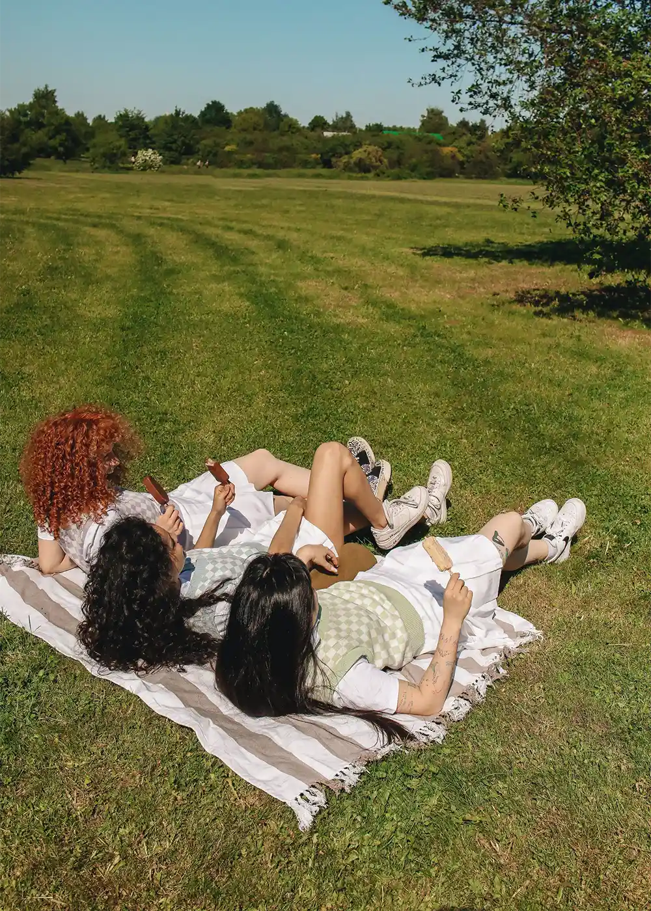

milescarter
3 minutes ago
Found this photo while clearing out my camera roll. Still one of my favorites

6
1
heyitsava
12 minutes ago
View from todays trip in my kayak
128
12
elliotframes
56 minutes ago
Behind the scenes from a recent campaign shoot❄️

321
36
jessyess
1 hour ago
Sunny days, cold snacks, and nowhere to be.

89
5